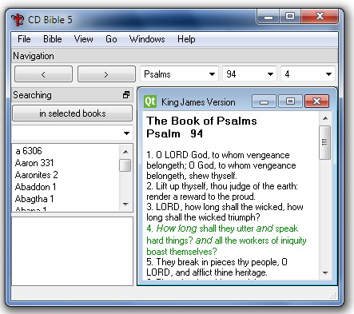

Software for reading and studying the Bible
Official site readthebible.sourceforge.net
News
General information
Contribute
Download
For programmers
Versions
Mail lists
8 April 2010New version 5 alpha 19. See Versions.
1 April 2010Another site that publishes software news has noticed and published information about "PC Bible" - softoxi.com.
23 March 2010 "Read the Bible" has been through process of testing and information about it has been published in softpedia.com. The software now has a certificate that it is 100% safe.
17 February 2010 Check out: Versions.
4 February 2010 Minor improvements have been added that is no worth mentioning. All changes can be see in the repository with the original code.
The main purpose of Read the Bible 5 is to add more to the existing freeware software for reading and studying the Bible:
Read the Bible 5 is a successor of "CD Bible - version 4.3", but presents totally new implementation that builds upon the ideas and files from previous versions.
You can see which Bible translations are included at these screenshots.
Read the Bible 5 is a cross-platform open-source software distributed under the (GPL) license, coded in C++ using Qt - a high-quality and powerful library that has also been used to produce other Bible software, for example CrossBgBible, Bulgarian Linux Bible, BibleTime).
If you would like to download the software go directly to the section Download.
The project team is open to volunteers so that we can achieve our goal - to create software that is user-friendly, cross-platform, unique with its features to study, quote and display the Bible.
At the time of writing this, the following people have participated in this project:
Vanyo Georgiev - author of Read the Bible 3.4, programmer and site administrator vanyog.com;
Teodor Bahchevanov - graphic designer, author of the logo and icon;
Peter Chervenkov - text typing;
Deyan Pavlov - translation in English.
If you wish to take part in the work, read how to Contribute".
All published versions so far are "alpha", meaning they are in development process and not finished. Yet they are totally usable and stable to a large degree. Features corresponding to those of version 4.3 will be added in the future. Along with that, and even with higher priority, new features are being developed that will make the software even more comfortable to use, for example it will be able to download on its own all needed Bible translations, to update itself automatically and so on.
Until all features of 4.3 are implemented in version 5 you can use both version at the same time, at least on Windows XP. For that purpose an item has been added to the menu of version 5 ("Windows - Version 4.3"). You can use both versions, at least under Windows XP, until all features of version 4.3 are added in version 5. For that purpose there is a menu item that was added in version 5, in menu "Windows" there is a command "Version 4.3", it will open version 4.3 and if it is not installed, then 4.3 can be automatically downloaded and installed. Thus, it is not necessary anymore to go through the complicated way of installing modules in version 4.3, one after another. Version 4.3 will use the translations that are downloaded by version 5.0. The rest of the modules of version 4.3 (dictionaries and illustrations), that are not yet added to version 5.0, will have to be downloaded and installed manually from the page of modules download.
Everyone who can contribute to the project is welcome to do so.
You don't have to be a software engineer. What is important is that you should have desire to support the development of a good product that will benefit many other people. Even a spelling error noticed is appreciated.
Read the Bible 5 is registered in the site of open-source software sourceforge.net and the best way to assist this project is to use the instruments for joined work that this site offers. It is necessary to register and then you can:
If you don't want to register, you can still contact directly Vanyo Georgiev at vanyog.com and ask him questions.
In order to speed up the implementation of new ideas and suggestions it is important that more developers join us to help for:
If you already have installed "Read the Bible 5" click menu "Help" - "Check for updates" and follow the instructions you will see there. If the update is not successful for some reason, then download and make fresh installation.
If this is the first time you install "Read the Bible 5", then download the file Bible-v5.1.1-win.zip and extract it into a separate directory.
Double-click on the Bible.exe file to start the program.
If you already have installed "Read the Bible 5" (alpha version or later), click menu "Help" - "Check for updates" and follow the instructions you will see there. If the update is not successful for some reason, then download and make fresh installation.
If this is the first time you install "Read the Bible 5", then download the file Bible-v5.1.1-mac.zip.
Double-click this file to extract it and then double-click the newly created directory to open it.
Double-click on the Bible.app file to start the program.
We don't have yet executable files for Linux. We need someone that can do this. It is necessary to compile the source code. See also the next section "For programmers".
In order to compile "Read the Bible 5" from source code you will have to have Qt LGPL. Download it from http://qt.nokia.com/downloads.
The latest release of the source code of "Read the Bible 5" can be found in the repository http://readthebible.svn.sourceforge.net/viewvc/readthebible.
To compile the program, depending on the OS, open: Command Prompt (for Windows), Terminal (for Mac OS X) or Console (for Linux) and enter command build.bat (for Windows) or ./build.sh (for Mac OS X or Linux).
If you decide to view or change the source code, it's good to keep this in mind:
The file encoding is UTF-8.
The purpose of some of the files is:
In the directory named "update" you will find the initial code of a small add-on that is executed after every new download and update from the Internet. This program extracts the downloaded .zip archive and then restarts the "Read the Bible 5".
build.bat and build.sh - make compilation (.bat file for Windows, and .sh file for Mac and Linux).
cpr.bat - make new directory "rel" and copy there the .exe file, as well as some others;
cps.bat - make new directory "src" and copy there the source code files;
cpm.sh and cps.sh - same as cpr.bat and cps.bat, but for Mac;
mac.sh - prepares for distribution the executable packet for Mac. When this script is executed, the directory that contains Qt must be renamed to /usr/local/Trollteck/Qt.4.6.0- (with dash at the end).
You can download from here archives with various Bible translations can be downloaded from here.
5.0 alpha 19 - working version, just the source code was uploaded to the repository.
5.0 alpha 18 - 17 February 2010
This was version alpha 17 but for Mac OS.
5.0 alpha 17 - 17 February 2010
5.0 alpha 17 - 4 January 2010
5.0 alpha 17 - 31 December 2009
5.0 alpha 16 - 9 December 2009
5.0 alpha 15 - 4 August 2009
5.0 alpha 14 - 23 July 2009
5.0 alpha 13 6 - March 2009
5.0 alpha 12 - 24 February 2009
5.0 alpha 11 - 10 February 2009
5.0 alpha 10 - 23 January 2009
5.0 alpha 9 - 6 January 2009
Changes in past years can be seen in the "History".
One way of sharing information about "Read the Bible 5" is with the mail-list readthebible-general@lists.sourceforge.net.
You can read the shared messages until now at this address:
http://sourceforge.net/mailarchive/forum.php?forum_name=readthebible-general.
You can send an e-mail to all registered participants in the project at this address:
readthebible-general@lists.sourceforge.net.
General information about the mail list can be found here:
https://lists.sourceforge.net/lists/listinfo/readthebible-general.
Here you can also add your own e-mail address, edit your profile or unsubscribe.
You can get instructions how you can change your level of contribution and participation by sending an e-mail to:
readthebible-general-request@lists.sourceforge.net
Type the word help in the Subject field.
Keep your password, you will need it in order to make changes!
Usually the software that maintains the mail-lists /Mailman/ will send you a message every month with invitation for change your password but this option can be canceled, if you like so. This reminding message also includes information how to unsubscribe or how to make changes to your profile.